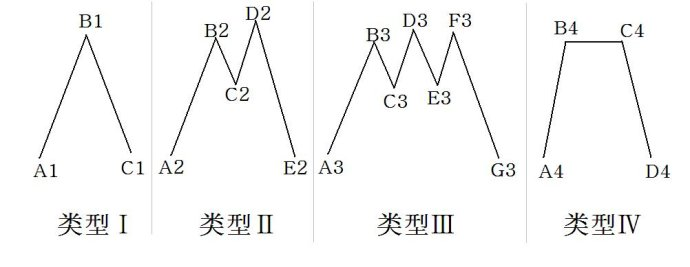
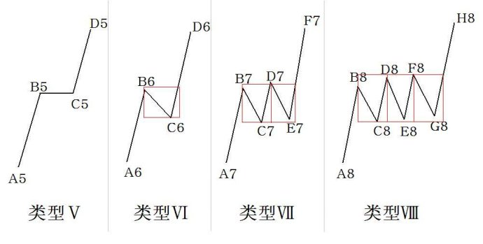

第363篇•价格走势的形态学与动力学（1）
谷为陵
这几天较忙，没有更新博客。趁着今天更新博客，我再给大家谈谈主升浪战法的一些新知识。主升浪战法是一个整体性的操作方法，是建立在“基本面+大盘面+市场面+技术面+股性面”这“五面整体顺势”基础上的，与单纯的依靠基本面分析或者技术面分析为基础的操作方法是不同的。我说过，我之所以要选“五面”作为分析基础，就是为了提高实战的成功率。
主升浪战法有两个特点：一是概括性极强，不仅包含了所有的投资理论，而且还发展出了新的理论；二是可塑性极强，不同的投资者可以由主升浪战法发展出适合自己特点的操作方法。就像《孙子兵法》，既道出了理论，也提出了方法，且不同的人可以由此发展出不同的战法。
任何操作方法都是由不可分割的三部分组成的：一是选股，二是买入，三是卖出。但不同的方法，在每一个环节上都不尽相同。比如，在选股方面，价值投资方法是以基本面分析为依据，而技术分析方法是以量价时空为依据；在买入方面，价值投资者往往是左侧交易，而技术派则以右侧交易为多；在卖出方面，价值投资者的最大特点是卖在股票基本面变坏时，一定是卖在右侧，另外，价值投资者没有止损的概念，而技术派的卖出方法则是多种多样的——左侧、右侧、左侧+右侧的都有，且多数技术派是非常注重止损的。
主升浪战法也包含同样的结构，但与其它方法相比，主升浪战法在每一个环节上都有自身的特点。在选股环节，主升浪战法是运用“五面整体顺势分析法”（简称‘五面分析法’）选股，且只选强势股。在买入环节，主升浪战法将买入环节进行了细分，将其细分为买点选择、买入方法、仓位控制三部分。在卖出环节，主升浪战法同样进行了细分，将其分为卖点选择、卖出方法、仓位控制三部分。这些都是原则性的东西，若将每一个环节都展开讲，内容都不少。
按照我的计划，我是打算按照理论、方法与实战分析这样的顺序，按部就班地、系统性地阐述主升浪战法的，但这并不排除我会将某些本因安排在后面讲的内容提前，这样做也是为了满足大家的需要。
我曾在前面讲过6期的《缠论的分析》，现在还有不少网友希望我能够接着讲下去。我的想法是，要待我将主升浪战法的主要部分讲完后，再接着讲《缠论的分析》会更好。但这并不影响我会在某些博文中，评价《缠论》的某些观点，也可以算是对于《缠论》的分析吧。
我认为，虽然我的主升浪战法的总体思想与《缠论》有很多不同，但《缠论》的某些观点还是很有启发意义的。比如，有人认为，缠论本质上可分两部分，一是形态学，二是动力学。所谓形态学，就是分型，中枢、走势类型、笔、线段之类的东西。所谓动力学，就是任何涉及背驰的，包括中枢、走势的能量结构之类的东西。我今天不是来分析《缠论》的，我今天只是要借鉴一下《缠论》的形态学与动力学的表述，或者说这两个概念词。我认为，形态学与动力学这两个词用得很好，既描述了价格运动的现象，也涉及到了价格运动的本质，这也正是我所需要的。
在我运用主升浪战法的实践中，我发现了一些不被人注意到的一些现象，通过这些现象，我逐渐认识到了这些现象背后本质。这些现象可以用（价格）形态学来描述，而现象背后的本质可以用（价格）动力学来解释。但要注意的是，我的形态学与动力学，与《缠论》的形态学与动力学是完全不同的。
在形态学方面，既然我的“五面分析法”中包含技术面分析，那么，就必然少不了对于价格走势、走势形态等的分析。由于主升浪战法只分析强势股的走势，所以，主升浪战法只分析强势股的形态学。我今天就以短期暴涨型主升浪为讨论对象。从浪型上看，短期暴涨型主升浪主要分为两类：一是一波上涨型，主升浪只有一波，在主升浪结束后，股价或者直接进入主跌浪，或者先进入盘整后，再进入主跌浪；二是两波上涨型，在第一波主升浪结束后，股价或者通过平台调整，或者通过振荡调整后，再走出第二波主升浪。这说起来简单，但实际上每一类主升浪都存在较多的形态。
比如，一波上涨型主升浪的主要形态如下：

一波上涨型主升浪主要有4类形态：类型Ⅰ为金字塔型，主升浪完成后，股价直接下跌，期间几乎没有像样的反弹；类型Ⅱ为双头型，主升浪完成后，股价出现了一次反弹，反弹的高度或者低于主升浪的高点B2,或者高于主升浪的高点B2,但这两点的意义是极为不同的，我在后面还要讲这个问题，在反弹后，股价跌破C2点，出现主跌浪；类型Ⅲ为三头（三重顶）型或者是多重顶型，主升浪完成后，股价出现了2次或2次以上的反弹，在反弹后，股价跌破C3、E3点，出现主跌浪；类型Ⅳ为（直线）平台型，主升浪完成后，股价构筑一个直线型平台，股价波动范围极窄，在平台运动一段时间后，股价最终跌破平台，出现主跌浪。在以上4种类形态中，走势按照从弱到强进行划分，则弱强的顺序恰好是类型Ⅰ、类型Ⅱ、类型Ⅲ、类型Ⅳ。
二波上涨型主升浪的主要形态如下：

若以两波主升浪之间的整理形态进行划分，则二波上涨型主升浪主要有4类形态：类型Ⅴ为（直线）平台整理型，主升浪完成后，股价构筑一个直线型平台，股价波动范围极窄，在平台运动一段时间后，股价最终向上突破平台，出现第二波主升浪。类型Ⅵ为“单V型”（图中红色框子框住的V型）调整型，主升浪完成后，股价仅出现一次“下跌+反弹”（V型）调整，其后股价反转向上，直接发动第二波主升浪，整个调整过程仅包含一个“V型”。类型Ⅶ为“双V型”调整型，主升浪完成后，股价出现2次“下跌+反弹”的调整，最终股价反转向上，发动第二波主升浪，整个调整过程包含2个“V型”。类型Ⅷ为“三V型”或者“多V型”调整型，主升浪完成后，股价出现3次或者以上的“下跌+反弹”的调整，最终股价反转向上，发动第二波主升浪。在以上4种类形态中，走势按照从强到弱进行划分，则强弱的顺序恰好是类型Ⅴ、类型Ⅵ、类型Ⅶ、类型Ⅷ。
在了解了主升浪的形态后，下面我们就要讨论这些形态的动力学问题，通过分析动力学，就可以理解这些形态形成的原因，并且发现这些形态中隐含的买点。